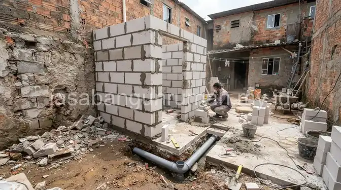

Daftar Isi
Relokasi kamar mandi belakang rumah subsidi umumnya membutuhkan biaya yang mencakup pembongkaran, pemindahan saluran pipa septic tank, hingga pemasangan ulang keramik dan sanitasi, dengan tujuan memperluas area dapur di sisinya.
Berapa Biaya Relokasi Kamar Mandi Belakang agar Dapur Menjadi Lebih Luas?
Biaya relokasi kamar mandi mencakup pembongkaran dinding dan lantai lama, pemindahan jalur pipa air bersih dan air kotor menuju posisi baru, serta pembangunan ulang dinding dan lantai kamar mandi pada lokasi yang telah ditentukan.
Secara umum, estimasi biaya relokasi kamar mandi rumah subsidi berkisar antara Rp 5.000.000 hingga Rp 10.000.000. Angka ini sangat bergantung pada jarak pemindahan, jenis material yang digunakan, serta tingkat kesulitan pembongkaran.
Komponen biaya terbesar biasanya berasal dari pekerjaan perpipaan, terutama jika posisi baru kamar mandi cukup jauh dari saluran septic tank yang sudah ada, karena membutuhkan pipa tambahan dan penggalian jalur baru.
Perencanaan posisi baru sebaiknya mempertimbangkan jarak terdekat ke septic tank agar biaya perpipaan tidak membengkak, sekaligus memastikan aliran pembuangan tetap lancar tanpa hambatan.
Apa Saja Kebutuhan Bahan Bangunan untuk Renovasi Kamar Mandi Rumah Subsidi?
Kebutuhan bahan bangunan untuk renovasi kamar mandi mencakup material dasar seperti semen dan pasir, hingga material finishing seperti keramik dan perlengkapan sanitasi. Berikut adalah rincian material yang wajib Anda siapkan:
| Bahan | Fungsi | Catatan |
|---|---|---|
| Keramik Dinding & Lantai | Pelapis dinding agar tahan air dan mudah dibersihkan | Pilih keramik lantai bertekstur kasar (anti-slip) dan keramik dinding yang mudah dibersihkan. |
| Closet Duduk / Jongkok | Sanitasi utama kamar mandi | Tersedia varian hemat air (dual flush) untuk kamar mandi kecil. |
| Pintu PVC / UPVC | Pintu tahan lembap untuk area basah | Lebih awet dibanding pintu kayu di kamar mandi karena anti rayap dan anti lapuk. |
| Pipa PVC & Fitting | Saluran air bersih dan pembuangan kotoran | Gunakan pipa tebal (tipe AW) untuk saluran bertekanan agar tidak mudah bocor. |
| Waterproofing | Mencegah rembesan air ke ruangan sebelah | Sangat penting diaplikasikan pada sudut lantai dan dinding sebelum pasang keramik. |

Pemilihan pintu PVC dibandingkan pintu kayu menjadi pertimbangan penting karena area kamar mandi rentan lembap, sehingga pintu kayu konvensional lebih mudah mengembang atau lapuk dalam jangka panjang.
7 Ide Layout Kamar Mandi yang Hemat Ruang dan Budget
Kamar mandi rumah subsidi umumnya memiliki ukuran terbatas, sekitar 1,2 x 1,5 meter. Untuk memaksimalkan ruang tersebut, berikut adalah 7 ide layout kreatif yang bisa Anda terapkan:
- Penempatan Linear (Satu Garis): Letakkan area shower, wastafel (jika ada), dan kloset dalam satu garis lurus menempel pada satu sisi dinding. Ini akan menghemat biaya instalasi pipa karena jalurnya menjadi lebih pendek.
- Gunakan Shower Tanpa Bak Mandi: Mengganti bak mandi konvensional dengan shower dapat menghemat hampir 40% ruang lantai kamar mandi Anda.
- Penyimpanan Vertikal (Ambalan): Manfaatkan area dinding kosong di atas kloset untuk memasang rak gantung atau ambalan sebagai tempat menyimpan sabun dan handuk.
- Pintu Geser atau Pintu Lipat PVC: Jika ruang gerak sangat sempit, gunakan pintu geser atau pintu lipat PVC agar bukaan pintu tidak membentur kloset atau menghalangi jalan.
- Warna Keramik Terang: Gunakan keramik berwarna putih, krem, atau abu-abu muda. Warna terang akan memantulkan cahaya dan memberikan ilusi ruangan yang lebih luas.
- Sekat Kaca Setengah Badan: Jika ingin memisahkan area basah dan kering, gunakan partisi kaca transparan setengah badan alih-alih tirai plastik yang membuat ruangan terasa sumpek.
- Pencahayaan dan Sirkulasi Udara Alami: Pasang roster atau jendela jalusi kecil di bagian atas dinding untuk memaksimalkan masuknya cahaya matahari dan mencegah kamar mandi menjadi lembap dan bau.
Kombinasi antara closet duduk hemat air, keramik ukuran sedang untuk mengurangi potongan sisa, dan pencahayaan alami dari ventilasi kecil di bagian atas dinding dapat membuat kamar mandi kecil tetap terasa nyaman digunakan.
Bagi pemilik rumah subsidi yang ingin mewujudkan desain kamar mandi hemat ruang ini, dapat menghubungi jasa desain interior kami untuk konsultasi dan estimasi biaya sesuai kondisi rumah.